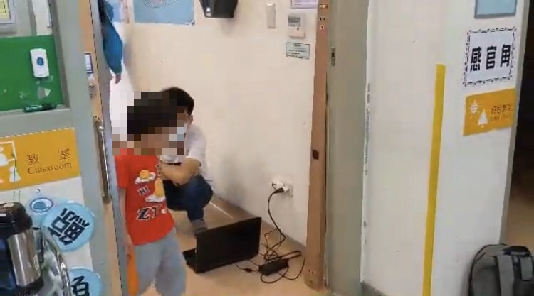
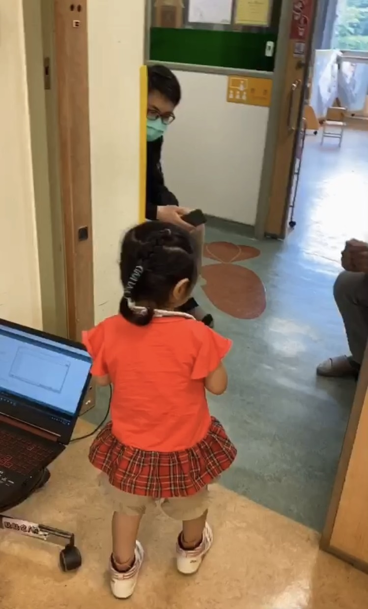
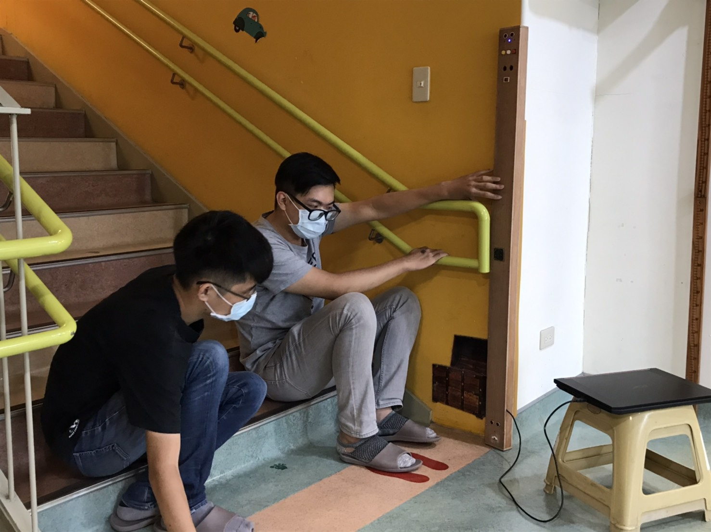

想要知道我們這組的專案在做些什麼嗎？歡迎往下查閱。
我們實際至機構量測進出門及上下樓梯之寬度，如下圖(圖一)至(圖四)所示。
 |
 |
圖一 目前成果圖 |
圖二 目前成果圖 |
 |
 |
圖三 目前成果圖 |
圖四 目前成果圖 |
另外，我們也暫時於麵包版上做好測試，如下圖(圖五)至(圖六)所示。
等實際硬體出來並組裝完成之後，便會至機構實際測試。
 |
 |
圖五 目前成果圖 |
圖六 目前成果圖 |
我們是用木板裁切鑽洞來製作硬體，硬體初版之樣貌，如下圖(圖一)所示。
有開關、按鍵及LCD顯示板，後來因為體積過於龐大占太多空間以及LCD顯示板過於耗電，所以我們才再改版製作(如後續)。
 |
圖一 目前成果圖 |
改版後之樣貌，如下圖(圖二)至(圖四)所示。
 |
圖二 目前成果圖(蓋子) |
圖三 目前成果圖(盒子) |
 |
圖四 目前成果圖(組裝後) |
完成木板(外殼)裁切鑽洞之後，我們將零件進行固定，將線路進行焊接，如下圖(圖一)(圖二)所示。
圖一 目前成果圖 |
圖二 目前成果圖 |
裝置之頂部樣貌，如下圖(圖三)所示，有開關、按鍵、三顆LED燈及上超音波感測器。
我們將原先的LCD顯示板改為三顆LED燈來指示。裝置之內部樣貌，如下圖(圖四)所示。
 |
 |
圖三 目前成果圖 |
圖四 目前成果圖 |
最終裝置整體樣貌，如下圖(圖五)所示。中段為聲音撥放器之擺放位置，尾段為下超音波之擺放位置。
接下來，就等待至機構實際測試。
 |
圖五 目前成果圖 |
完成裝置之後，我們實際治機構進行測試，如下圖(圖一)(圖二)所示。
|  |
圖一 實測概況圖 |
圖二 實測概況圖 |
測試波形圖，如下圖(圖三)(圖四)所示。
紅線為上超音波之測距，藍線為下超音波之測距。
 |
圖三 測試波形圖 |
圖四 測試波形圖 |
影片一 測試影片 (孩童) |
實際至機構測試之後有兩個問題：1.上超音波再移高一點。2.走路時間差還要調整，但已經好很多了。
基本上小孩走過去都會叫了，大人走過去有很小的機率會叫，另外上超音波有時候訊號會亂跳。
上超音波再移高一點及走路時間差調整之後，再實際至機構測試，如下圖(圖一)(圖二)所示。
圖一 測試概況圖 |
圖二 測試概況圖 |
影片一 測試影片 (哲賢) |
影片二 測試影片 (哲賢) |
影片三 測試影片 (照揚) |
影片四 測試影片 (照揚) |
影片五 測試影片 (峻宇) |
影片六 測試影片 (峻宇) |
影片七 測試波形影片 (峻宇) |
並找孩童一起來測試，如下圖(圖三)(圖四)所示。
|  |
圖三 測試概況圖 |
圖四 測試概況圖 |
影片八 測試影片 (孩童) |
教室門口再實際測試之後，我們覺得要再把下超音波再移高一些，以減少步伐過大的失準發生。
完成之後便移至樓梯口進行測試，如下圖(圖五)(圖六)所示。
|  |
圖五 測試概況圖 |
圖六 測試概況圖 |
樓梯口實際測試完之後，發現因為環境干擾造成造成許多雜訊的產生，所以還要再改良。

優點
缺點